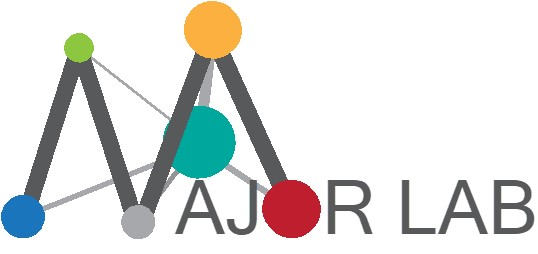

Opportunities
 The Major Lab is always interested in post-doc and graduate students with experience in signal transduction, proteomics, computational biology, and/or bioinformatics. Interested parties should contact Dr. Major via email and include their CV as well as contact information for three recommenders of the applicant. Undergraduate students wishing to learn more about research are also welcome to contact Dr. Major.